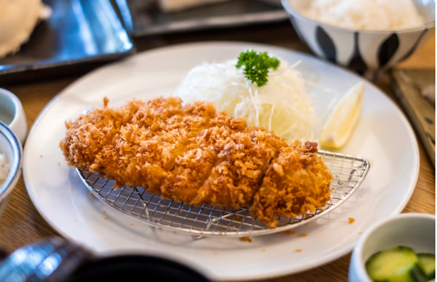

Air Fryer Chicken Katsu with Homemade Katsu Sauce

Description
Chicken katsu cooked in an air fryer that is juicy and tender on the inside and crispy on
the outside. The sauce is just the right amount of sweet and tangyto go well with the chicken. If preferred,
serve over rice.
Ingredients
Katsu Sauce
- ½ cup ketchup
- 2 tablespoons soy sauce
- 1 tablespoon brown sugar
- 1 tablespoon sherry
- 2 teaspoons Worcestershire sauce
- 1 teaspoon minced garlic
Chicken
- 1 pound boneless skinless chicken breast, sliced in half horizontally
- 1 pinch salt and ground black pepper to taste
- 2 large eggs, beaten
- 1 ½ cups panko bread crumbs
- cooking spray
Steps
- Gather all ingredients.
-
Prepare sauce: Whisk ketchup, soy sauce, brown sugar, sherry,
Worcestershire sauce, and garlic together in a bowl until sugar has
dissolved. Set katsu sauce aside. Preheat an air fryer to 350 degrees F
(175 degrees C).
-
Meanwhile, lay chicken pieces on a clean work surface. Season with salt
and pepper.
-
Place beaten eggs in a flat dish or shallow bowl. Pour bread crumbs into
a second flat dish. Dredge chicken pieces in egg and then in bread crumbs.
Repeat by dredging chicken in egg and then bread crumbs again, pressing
down so the bread crumbs stick to the chicken.
-
Place chicken pieces in the basket of the preheated air fryer. Spray the tops
with nonstick cooking spray.
-
Air fry for 10 minutes. Flip chicken pieces over using a spatula and spray the
tops with nonstick cooking spray. Cook for 8 minutes more. Transfer chicken to
a cutting board and slice. Serve with katsu sauce.
- Serve with katsu sauce and enjoy!
Home